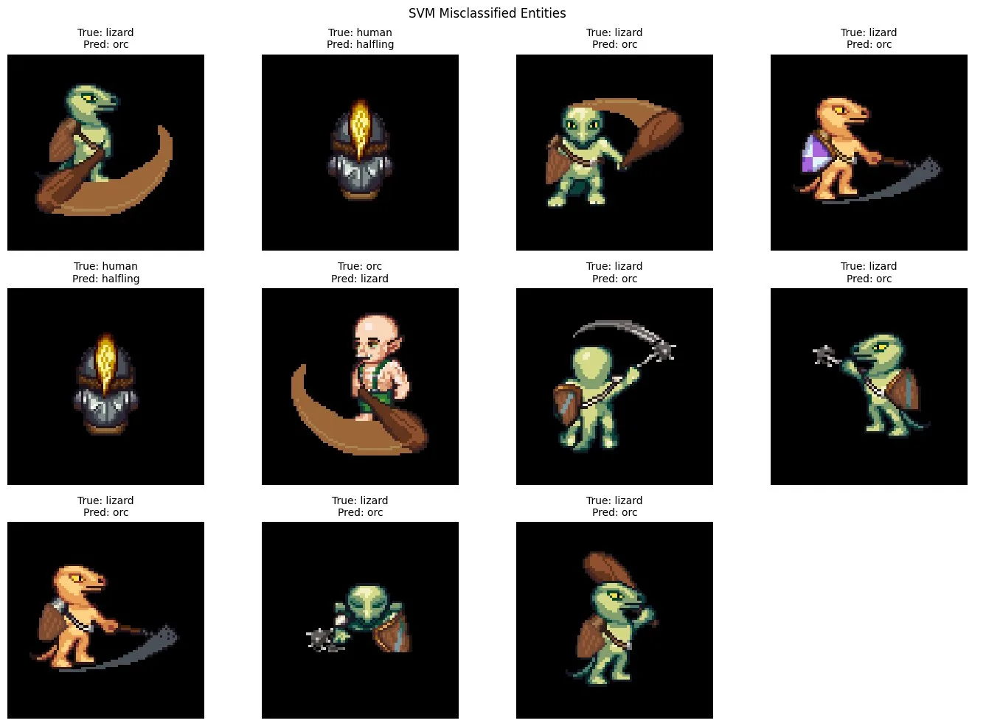
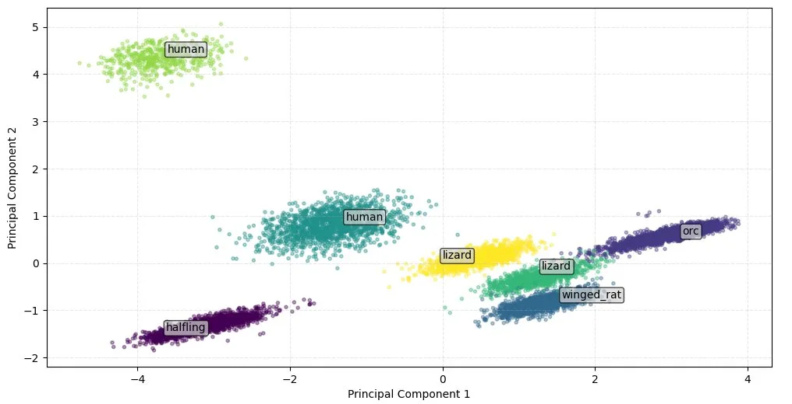
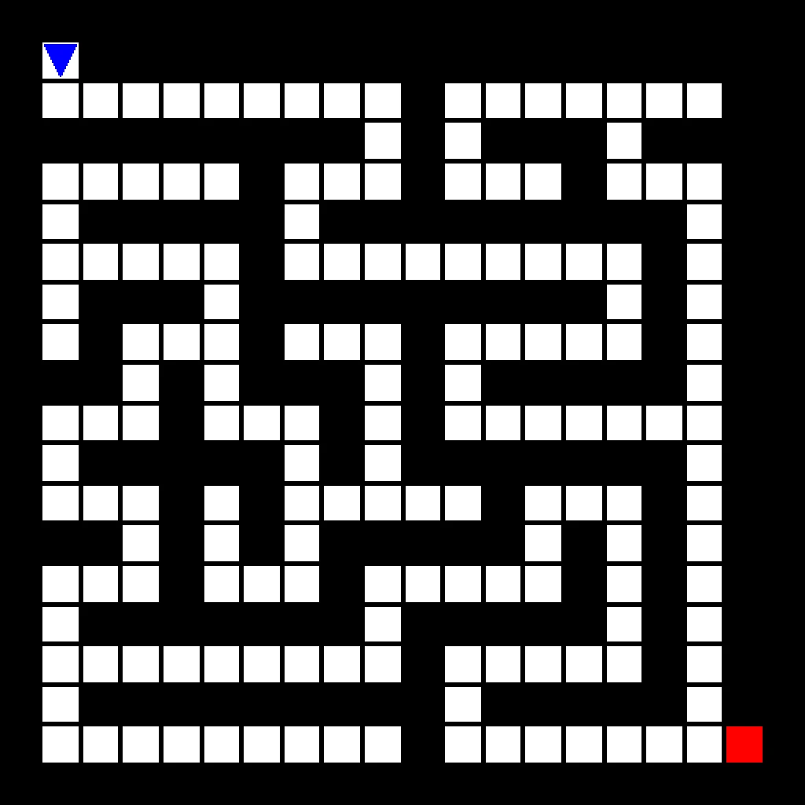
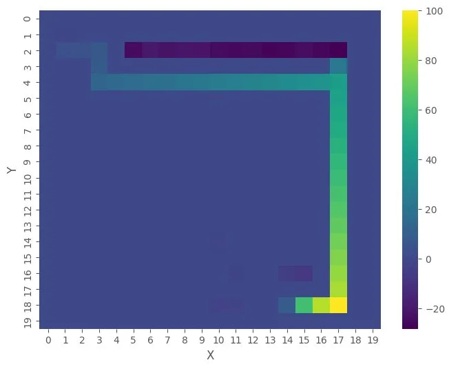

Applied machine learning · MSc coursework
Classification, clustering and RL on one game world
The assessment for Bristol's AI for Robotics unit is set in a dungeon-crawler game world. The brief was to pick three tasks in that world. One is solved with supervised learning, one with unsupervised learning and one with reinforcement learning, comparing two algorithms on each.
The setup
The world is a maze dungeon with five species of entity, some friendly and some hostile. There are three datasets: 8,023 sprite images, a table of sensor readings for 10,000 entities with most species labels destroyed, and a Gymnasium gridworld of the maze. The brief casts the robot as HeroBot, so the report is written as its quest log.
I set the tasks up as a pipeline for the robot. It identifies entities from images, recovers the species from the damaged table, and learns the maze.
Friend or foe from sprites
The image set is skewed. Humans are 40 per cent of it and the rarest class, the winged rat, 7 per cent. Before training, I tested features to help the rare class: per-class colour profiles, entity size and HOG shape descriptors. Size separated the winged rat well and was added to the raw pixels. HOG separated much less than I expected and was left out.
KNN came first, with k=3 chosen by validation accuracy and a cosine distance, which did slightly better than euclidean. It reached 97.6 per cent on the 1,604 held-out test images. The metric I tracked most was hostile entities classed as friendly, since in the game that error gets you ambushed. KNN made six. The SVM (RBF kernel, C=10 from a short randomised search) made one, at 99.3 per cent overall. Both had perfect recall on the winged rat.
The main confusion was orc and lizard, probably because the weapons are similar and fill a lot of the frame. I picked k on overall accuracy and only checked afterwards that it also minimised the hostile-as-friendly error. It did here by chance.

Species from a damaged table
The sensor table has ten attributes per entity. Only 500 of its 10,000 species labels survive. I used clustering and held back the surviving labels to check the result. Missing values were filled with each attribute's median, and everything was standardised, since both algorithms measure distance.
K-Means gave no clear elbow, so I chose k by silhouette score. That gave seven clusters, two more than there are species. On two principal components the clusters are clean, and each contains a single species by the surviving labels. Humans and lizards each split in two. The second human cluster scores much higher on intelligence and magic, so the split is real structure in the data.
Ward-linkage hierarchical clustering recovered the five species directly, one per cluster. A split higher up its tree separates the friendly species from the neutral and hostile ones. A small decision tree fitted to that split showed one attribute, stench, predicting hostile or friendly on its own 97.5 per cent of the time. The robot can make that call from one scan.

Learning the maze
The gridworld costs one point per step, so the shortest route maximises return. I compared tabular Q-learning and SARSA, with hyperparameters tuned by Optuna. I added a penalty for three consecutive moves in the same direction, so the shortest route is not always the safest action sequence.

The first attempt generated a new maze every episode, aiming for a general solving strategy. It failed. Tabular methods key their values to exact coordinates, so each new layout makes the learned values stale. Once exploration decays, the agent exploits a map that no longer exists and spins in place. This is a representation problem and tuning does not fix it, so I changed the task to fixed mazes.
On a fixed maze both algorithms work. A 20×20 maze is learned in around 500 episodes, and the maximum Q-values rise along the route towards the exit. SARSA needed its own tuning run. Its best exploration decay was much faster than Q-learning's (0.93 against 0.995), and it reached its plateau roughly 100 to 150 episodes sooner. Both found the same shortest path on this maze. On other mazes SARSA sometimes matched or beat Q-learning, which should not happen if Q-learning had fully converged. The training budget was probably the remaining limit.

What I'd do differently
I would set the selection metric before tuning. Here that would mean choosing k on hostile entities classed as friendly. When an algorithm fails, I would check whether the cause is tuning or representation before spending more compute.
← All projects